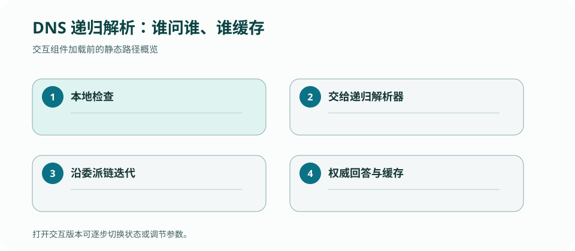

CS 168 · LECTURE 15 · 2026-10-15 · 应用与端到端
DNS 把人类名称映射成可变的服务位置，并用分层委派与缓存把全球查询负载分散出去。
版本快照：Fall 2026 官方课表与在线教材，核对日期 2026-09-02；官网仍标注 under construction，日期与政策可能变化。
本地 resolver 第一次从不知道 example.com 开始，如何找到权威答案；第二次为什么快得多？
应用通常把问题交给 stub resolver；递归 resolver 负责追踪委派。root server 不保存所有主机地址，而是指向顶级域；TLD 再指向域名的 authoritative server；只有权威服务器发布该 zone 的记录。
所谓“递归查询”描述客户端希望 resolver 完成全部工作，“迭代查询”描述 resolver 逐级拿 referral。一次解析同时包含两种交互。
A/AAAA 把名字映射到地址，NS 指定权威服务器，CNAME 建立别名，MX 指定邮件交换，TXT 承载验证等文本。每条 RR 都有 owner、type、class、TTL 与 value。
CNAME 会引入额外查找；NS referral 还可能需要 glue address 打破“要找 NS 地址必须先问该 NS”的循环依赖。
缓存减少上游负载和查询延迟，但在 TTL 内可能返回旧值。短 TTL 加快变更，却增加查询流量与对权威服务的依赖；长 TTL 提升稳定性，却延长迁移窗口。
negative caching 也会缓存不存在结果。发布新记录后“仍然 NXDOMAIN”可能来自旧否定缓存，不一定是当前权威配置仍错。
传统 DNS 响应使用事务 ID 与源端口做匹配，但仍可能遭受缓存投毒。DNSSEC 用签名建立从信任锚到记录的可验证链，保证来源与完整性，不提供查询机密性。
DoH/DoT 加密 stub 到 resolver 的链路，但把信任转移给 resolver；它们与 DNSSEC 解决的问题不同。
DNS 是多角色、带缓存的请求链，逐步展示能澄清递归与迭代查询。

从空缓存解析 www.example.com，列出每次 query、referral、最终 RR 与可缓存对象；再让 A 记录 TTL 到期而 NS 未到期，重走流程。
检查：DNSSEC 主要提供什么？
stub resolver 查本地 cache
stub resolver 查本地 cache；miss 后递归 resolver 沿 root→TLD→authoritative，逐层保存带 TTL 的 mapping。
检查：判断一个实现分支是否必要，最有力的问题是什么？
检查：若把这一机制移到完全不同的网络位置，首先应重新确认什么？
画一次 cache miss 与随后 cache hit 的 message timeline。
答案必须出现 packet/message、local state/table、触发 event、after state 与 output；只给定义不算完成。
解析 www.example.test，权威区先返回 CNAME，再解析目标 A 记录。
| 步 | 消息 | 保存的状态 | 为何继续 |
|---|---|---|---|
| 0 | stub→resolver | pending(client,name,type,ID,deadline) | 关联响应 |
| 1 | resolver→root | .test NS referral + TTL | 缩小 authority |
| 2 | resolver→TLD | example.test NS + glue | 找到 authoritative |
| 3 | authoritative→resolver: CNAME | alias 与独立 expiry | CNAME 不是地址 |
| 4 | cdn authority→resolver: A | A + TTL；完成 pending | 返回 client |
| 5 | 第二客户端查询 | 命中未过期 RRset | 无需 root/TLD packet |
权威迁移地址后 resolver 永久回答旧记录。TTL 不是“保证立即一致”，而是陈旧状态的最长租约；短 TTL 增加查询负载，长 TTL 延长故障切换传播。
| 状态 | 事件 | 变化 | 不变量 |
|---|---|---|---|
| positive cache | answer/referral | 按 RRset + expiry 保存 | 只返回未过期匹配记录 |
| negative cache | 权威 NXDOMAIN | 保存有界失败 | 失败也会过期 |
| pending query | send/response/timeout | 建立或完成关联 | 无关 response 不交给 client |
| delegation | NS/glue | 移向更具体 authority | 查询单调推进 |
检查：收到 CNAME 后为何继续？
检查：A 记录 TTL 到期后？
检查：pending query state 为何存在？
正文是 CourseStack 的中文解释与重新绘制的教学例子；官方页面负责课程原始定义，历史仓库只提供你的实现证据。